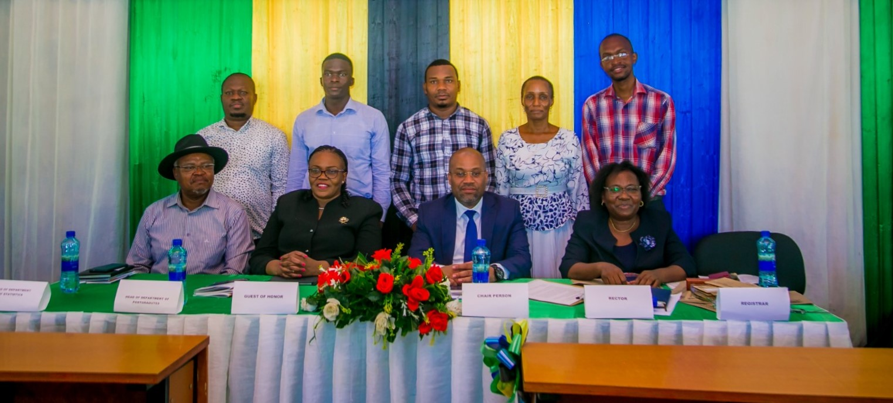

About the Convocation
The Eastc University Convocation is a celebration of Academic achievements and milestone.
Event Details
- Date:October 15,2024
- Time:10:00 AM
- Location: EASTC FUNCTIONL HALL
Contact information
For inquiries ,please contact us:
The 7 thANNUAL CONVOCATION CEREMONY
THEME:modernization data ecosystem to accelerate the implementations of African continental free trade(AFCFTA).The role of official statistics and big data in economic transformation and sustainable development in Africa
.png)
The Eastc University Convocation is a celebration of Academic achievements and milestone.
For inquiries ,please contact us:
| TIME | ACTIVITY | RESPONSIBLE |
|---|---|---|
| 8:30 - 9:30 | REGISTRATION | ALL, SECRETARIAT |
| 9:30 - 9:35 | Presenting the programme | M.C. |
| 9:35 - 9:45 | Introduction of Guests and welcoming remarks | President Of The Convocation |
| 9:45 - 10:00 | Opening Remarks, Constituting the Convocation and Preamble to the award presentation | Rector |
| 10:00 - 10:20 | Awarding prizes to the best students | Rector, Guests of honor |
| 10:20 - 10:40 | Certificate of merits to EASTCSO leaders | Rector, Guests of honor |
| 10:40 - 11:20 | Key note address | Guests of honor (ESRF) |
| 11:20 - 11:35 | 1st EXperience Sharing | Presentter(Aluni-OCSG) |
| 11:35 - 11:45 | 2nd Experience Sharing | Presentter(Aluni-IFI) |
| 11:45 - 12:00 | rdpresentation | Lecturer (female- Rectors award reseaarch and publication) |
| 12:00 - 12:15 | 4th Presentation | Lecturer (male- Rectors award reseaarch and publication) |
| 12:15 - 12:20 | Experience of african statistical day | participant (Mr. JOHN BEHISTA) |
| 12:20 - 13:40 | discussion | All,MC |
| 13:40 - 13:45 | Vote of thanks | Rector |
| 13:45 | Departure | Guests of honor & Rector |
| 13:45 - 14:00 | Group PPhoto | M.C |
| 14:00 - 15:00 | annual general meeting | President of the convocation, secretary, EASTC students and aluni |
| 15:0 - 15:05 | Vote of thanks and closing | President of the convocation |

President of the convocation
he was responsible for the introduction of guests and welcoming remarks, and also responsible for annual general meeting, vote of thhanks and closingHe also introduced the theme of the year that state as odernization data ecosystem to accelerate the immplementations of african continental free trade (AFCFTA)and also he state on The role of official statistics and big data in the economic transformation and sustainable development in Africa
he also introduced the eastern african statistical training comunities that involved in studying, developing, researching as well as the application of ICT solutionshe appreciated the benefactors who provided support on the preparation of the convocation especially in award giving processes. since they begun and continue their proffesional relationship that gives mutual development
he congratulated the graduates and wished them success in their next life and he ended his remarks by warmly welcoing them all to the 6thconvocation of EASTCof the year 2023.
RECTOR
She appreciated the given chance to show or to offer remarks of the Rector at this 6thEasrc convocation. but also he appreciatedthe presence of the guests of honor
she also explained the significant development that occured at our center. he also explained and described the awards which will be presented on that day